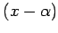
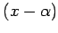
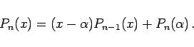
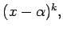
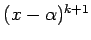

Inhalt Index DeskTop Bronstein

 Arithmetik Algebraische und transzendente Gleichungen Gleichungen n-ten Grades Allgemeine Eigenschaften der algebraischen Gleichungen
Arithmetik Algebraische und transzendente Gleichungen Gleichungen n-ten Grades Allgemeine Eigenschaften der algebraischen Gleichungen


Die linke Seite der Gleichung
wird Polynom Pn(x) vom Grade n genannt, eine Lösung dieser Gleichung eine Wurzel des Polynoms Pn(x). Wenn  eine Wurzel des Polynoms ist, dann ist Pn(x) durch  teilbar. Im allgemeinen Falle gilt
eine Wurzel des Polynoms ist, dann ist Pn(x) durch  teilbar. Im allgemeinen Falle gilt
|  | (1.165b) |
Dabei ist Pn-1(x) ein Polynom vom Grade n - 1. Wenn Pn(x) durch  aber nicht mehr durch  teilbar ist, dann wird  eine k-fache Wurzel der Gleichung Pn(x) = 0 genannt. In diesem Falle ist
eine k-fache Wurzel der Gleichung Pn(x) = 0 genannt. In diesem Falle ist  gemeinsame Wurzel des Polynoms Pn(x) und seiner Ableitungen bis einschließlich der (k-1)-ten Ordnung.
gemeinsame Wurzel des Polynoms Pn(x) und seiner Ableitungen bis einschließlich der (k-1)-ten Ordnung.